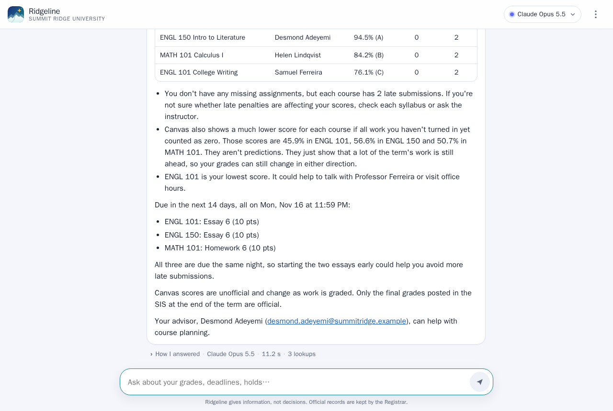
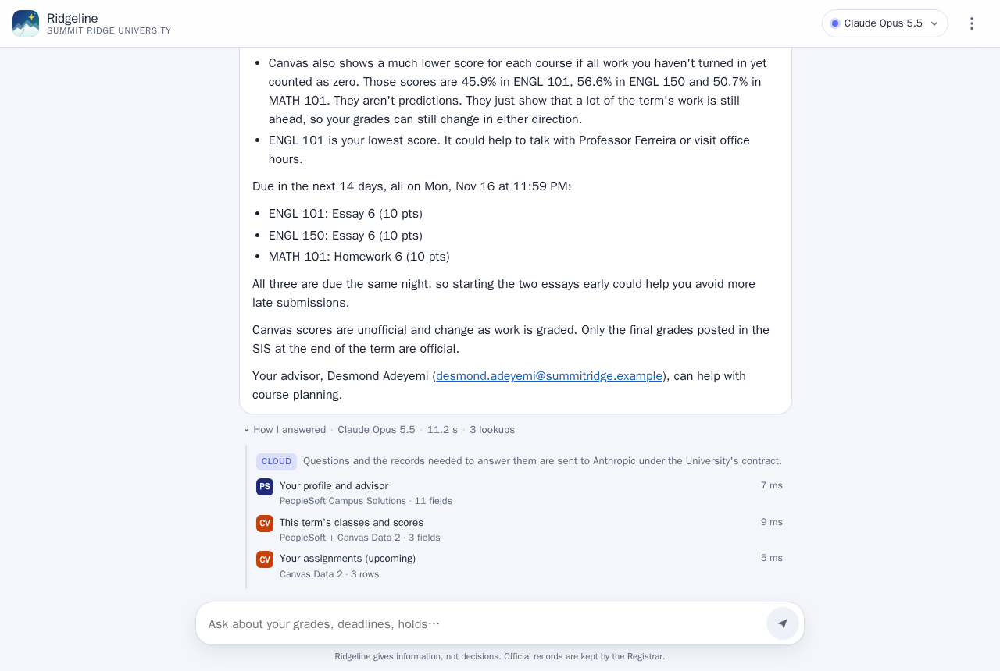
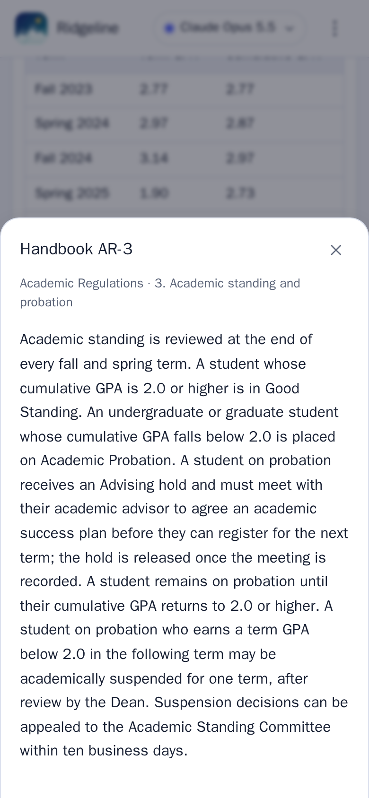
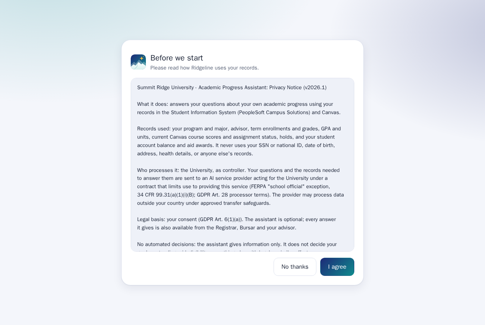
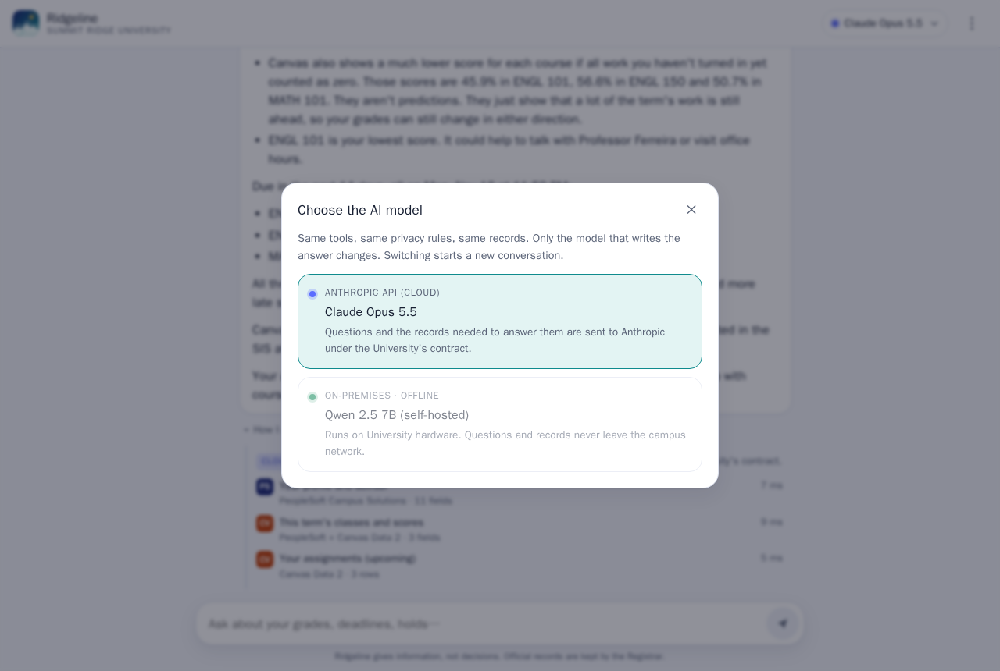

Lab · Agentic AI · Local LLMs & RAG · Enterprise Data
An assistant that answers a signed-in student's questions about their own progress. It reads their records in PeopleSoft Campus Solutions and Canvas, cites the university's policy handbook, and runs on either Claude or a self-hosted model. The privacy rules live in the database, not in the prompt.

How it works
Every answer draws on the student's own records and the university's written policy, and shows which of each it used.
Student
Signs in, accepts the noticePeopleSoft user ID and password. The app gets back an opaque session id and nothing else.
Agent tools
Records and policystudent_portal functions that take only the session id.Model
Writes the answer
Under each answer: the model, the time it took, where the data went, every record lookup with its source system, and the handbook sections it retrieved.

Answers cite handbook sections such as [AR-3]. Tapping a citation opens the policy text itself, so the student can check it.
Privacy by construction
student_portal functions and read no tables.
The notice names the controller, the processor, the legal basis and the FERPA exception it relies on. A compliance map ties each FERPA, GLBA and GDPR requirement to the control that meets it, and SQL tests check the isolation, consent, minimisation and audit guarantees.
Cloud or campus

The student picks the model live. The tools, the privacy rules and the records stay the same; only the model that writes the answer changes.
Embeddings always run locally (bge-small-en-v1.5, baked into the image), so the handbook and questions are never sent anywhere to be embedded. For the self-hosted model, thinking is off and handbook sections are retrieved before generation, which smaller models handle more reliably than searching for themselves.
The self-hosted model doesn't need a data centre. On a mini PC's built-in Radeon 780M graphics, Gemma 4 12B starts answering in under ten seconds and finishes in about twenty. The answer streams in as it's written, so the student reads while the model writes. The Claude answer above took 11 seconds.
| Question | CPU only, before tuning | CPU, streamed and trimmed | Radeon 780M graphics |
|---|---|---|---|
| "How am I doing in my classes this term?" | 141 s | text appears at 26 s, done at 46 s | text appears at 9.5 s, done at 20 s |
| "What happens if my GPA drops below 2.0?" | 73 s | text appears at 18 s, done at 33 s | text appears at 5.6 s, done at 17 s |
The tuning: the model reads the fixed system prompt and tool definitions once at startup and keeps them cached, fewer handbook sections go into each prompt, and record lookups are sent as compact JSON. The integrated graphics read prompts about five times faster than the CPU (about 150 tokens a second against 30). Writing speed barely changes (about 14 tokens a second against 11), because the graphics share the CPU's memory and writing is limited by memory speed. A dedicated GPU or a data-centre endpoint (vLLM, TGI, NIM) speeds up both.
The roots
Ridgeline sits on a teaching database for a fictional Summit Ridge University, filled with deterministic synthetic data. It is shaped like the real systems but isn't Oracle PeopleSoft or an Instructure export.
| Layer | What it models | Scale |
|---|---|---|
| PeopleSoft HCM | Employees, effective-dated job history, positions, payroll and security | 77 employees, 12 years of history, 3.5k paychecks |
| Campus Solutions | Admissions, programs, class schedule, enrollment, grades and GPA, degrees, billing, aid and holds | 200 students, 256 sections, 2.9k enrollments |
| Canvas Data 2 | The LMS warehouse as dap syncdb lays it out, fed from Campus Solutions on SIS ids | 272 courses, 3k assignments, 29k submissions |
| Analytics | Roster sync exceptions, grade reconciliation and an at-risk engagement flag | Cross-system views |
| Student portal | Privacy-scoped functions, consent, audit log and the policy vector store | The only surface the agent can touch |
Run it
Ridgeline runs with Docker Compose on one machine: PostgreSQL with pgvector, the web app, and optionally Ollama. It isn't hosted here, because a real deployment needs a vendor contract, SSO and a DPIA first.
# Claude backend: put ANTHROPIC_API_KEY in .env ./scripts/demo.sh # http://localhost:8000 ./scripts/demo.sh --local # also enable the self-hosted model # every tool and the retrieval, with no model calls docker compose --profile agent run --rm agent --self-test
Every name, grade and record in the demo is synthetic. There is no public sign-in; the screenshots on this page come from a local run.